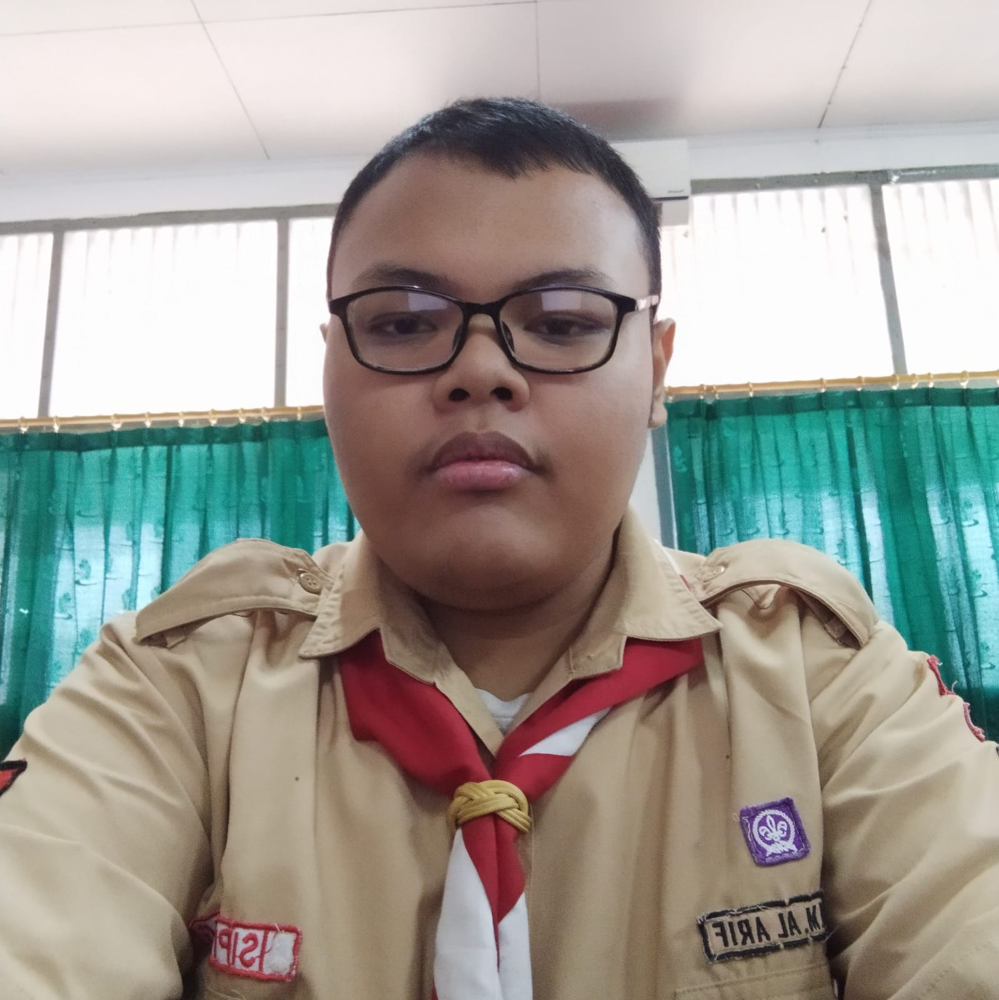
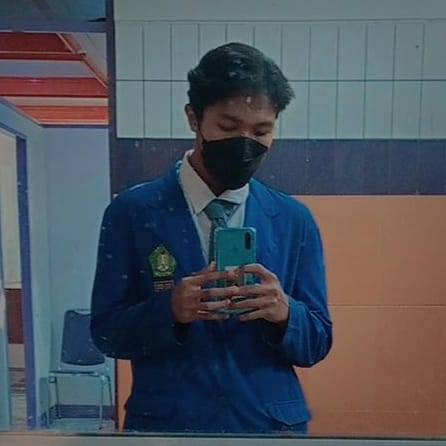
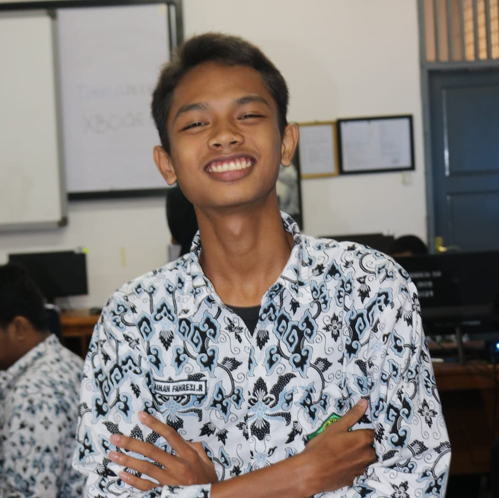
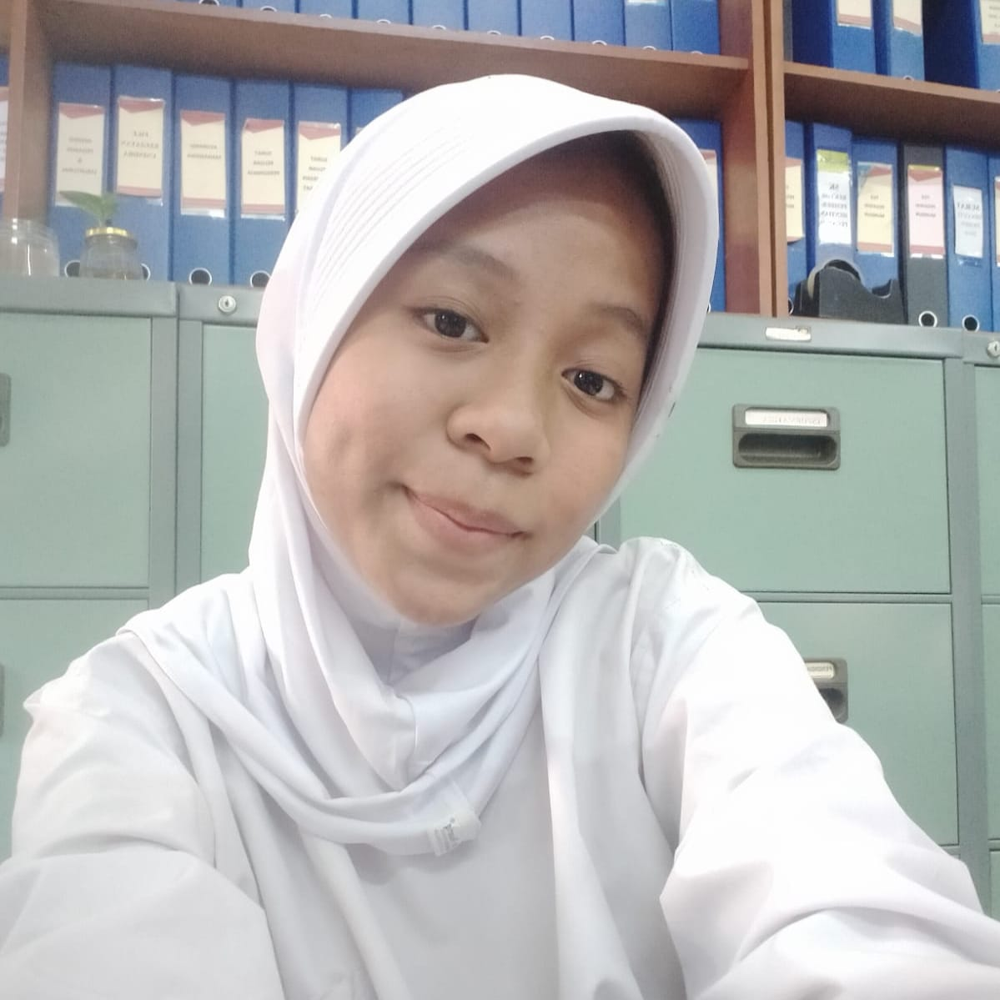

OUR TEAM

Fauzan M.A
StoryBoard Design

Hadiid Ilman R
Web Designer

Raihan F.R
Source Material

Sagita Ayu A.N
Documentation
Kelompok kami membuat web dengan tema keindahan Yogyakarta, kami memilih Yogyakarta karena daerah ini sendiri jarang ter ekspose di media televisi ataupun media lainnya
Oleh karena tujuan kami yaitu mempermudah masyrakat untuk mengenal Yogyakarta melalui web yang kami buat, yang dimana pada isi web tersebut berisi latar belakang dari Daerah Yogyakarta, lalu di sertai dengan Tarian adatnya, makanan khas , dan rumah adat